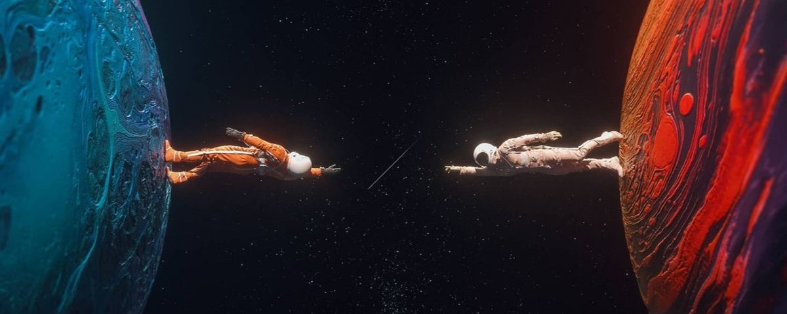

×

각자가 이 세상에 존재하는 방식이 다르기에 각자에게 보이는 우주는 다릅니다. 예술교육을 통해 우리는 내가 존재하는 행성을 발견하고, 그곳에서 보이는 나의 우주를 바라봅니다. 내가 바라보는 그 우주는 다시 내 행성의 궤도가 변하는 만큼이나 다양합니다. 그리고 예술교육을 통해 우리는 나와 전혀 다른 우주를 바라보는 무한한 행성들과 조우하게 됩니다. 그 무한한 가능성을 담고 있는 우주를 탐험하는 일이 예술교육이라고 생각합니다. 그 무한한 우주의 진리는 없습니다. 예술에 정답은 없으니까요. 다만 우리가 확신할 수 있는 건, 내가 바라보는 우주는 그 자체로 분명하다는 것입니다. 내가 바라보는 우주야말로 진짜 우주이고, 내게 보지 않는 것은 나에게는 영원히 존재하지 않는 것과 마찬가지 입니다. 그렇기에 우주가 무한하다는 가능성은 나에게 담겨있습니다. 그걸 발견하는 일, 끝없는 우주를 여행하는 것이 우리가 생각하는 예술교육입니다.
